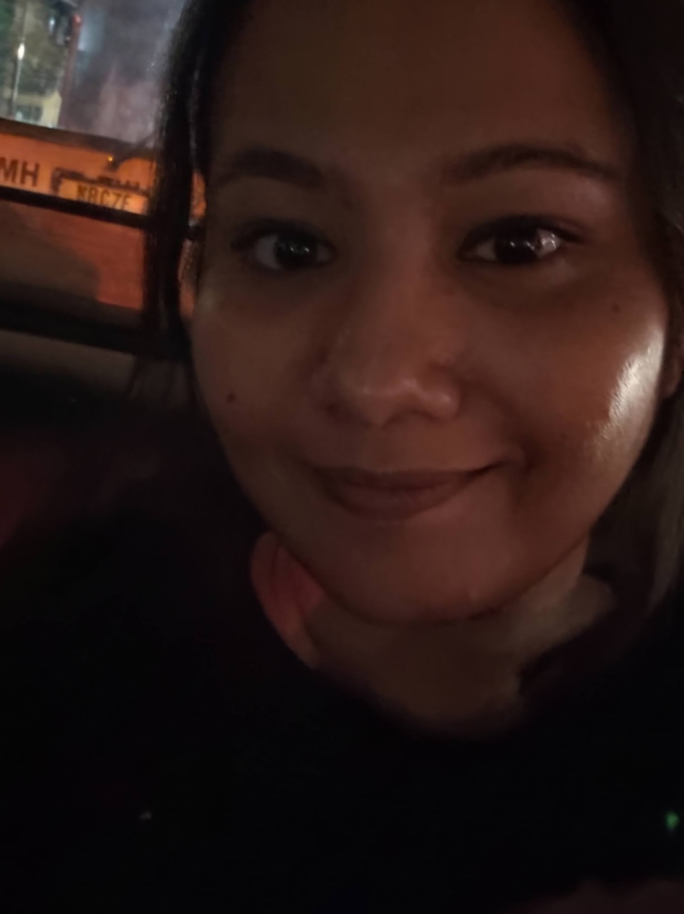

Remote Sensing, Department of Civil Engineering
Indian Institute of Technology Bombay
Anjita Neelatt Anilkumar
I find desert locust swarms on Doppler weather radar and measure the crop damage they leave with satellite data, so that early warnings can reach farmers sooner.
Open to postdoctoral positions. PhD thesis submission before January 2027. Available to start remotely now and to relocate in early 2027.
Latest
From radar echo to damage map
Swarms move fast and cross borders, and ground surveys see only part of the picture. My PhD builds a chain from detection to damage assessment using India's operational weather radars and satellite data in Google Earth Engine.
-
Detect
Locate swarm echoes on single- and dual-polarisation Doppler weather radars.
-
Identify
A deep learning framework picks out swarm echoes in near real time from dual-polarisation data.
Paper under review (2026). Related: IEEE InGARSS 2026.
-
Anticipate
Maxent habitat models show where swarms are likely to settle. Land surface temperature, NDVI and soil type are the top predictors.
-
Assess
DELVE, a public Google Earth Engine app, maps vegetation damage from pixel-wise NDVI anomalies after an event.
Try DELVE in your browser
DEsert Locust VEgetation damage assessment. The app maps pixel-wise NDVI anomalies, the drop in greenness against normal conditions, to show where vegetation was hit after a swarm passed. It runs on Google Earth Engine, so there is nothing to install.
Supported by the MHRD PhD fellowship and carried out under the Ministry of Earth Sciences project MoES/16/03/2022-RDESS/AI-ML-3, Government of India.
Earlier, at NITK, I assessed the vulnerability of the Kasaragod coast in Kerala using eleven physical and socioeconomic variables (Anthropocene Coasts, 2025).
Publications
Full list with citations on Google Scholar.
Talks
OralPosterAward
Workshops
Recognition
Best Presentation Award
HYDRO-2020, 25th International Conference, NIT Rourkela
MHRD PhD fellowship
Government of India, for the PhD at IIT Bombay
Teaching
Helping students read the microwave part of the spectrum, from radar basics to image processing.
- 2023 to present
Teaching Assistant, NPTEL
Beginner's Guide to Weather Radars (goes live in 2027): lecture materials and quizzes.
Microwave Remote Sensing in Hydrology: weekly assignments and student queries.
- 2021 to 2026
Teaching Assistant, IIT Bombay
Microwave Remote Sensing and Digital Image Processing of Remotely Sensed Data: programming tutorials, quizzes and assignments.
- 2020 to 2021
Assistant Professor, Toc H Institute of Science and Technology, Kerala
Engineering Mechanics, GIS, Environmental Health and Safety, Survey Lab. Thesis supervision, Mapathon Keralam, and the Periyar river pollution abatement project with the Kerala Water Resources Department.
Education
PhD, Remote Sensing, IIT Bombay
Doppler Weather Radar and Satellite Remote Sensing Approaches to India's Desert Locust Challenge. Advisor: Prof. J. Indu.
Research intern, IIT Bombay
Detected stationary aircraft in aerial images with an SVM trained on HOG features.
MTech, Remote Sensing and GIS, NIT Karnataka
Coastal Vulnerability Assessment of the Kasaragod Coast in Kerala. Advisor: Prof. G. S. Dwarakish.
BTech, Civil Engineering, FISAT, Kerala
Prediction of Compaction Parameters of Soil Using Genetic Algorithm.
Methods
Programming
Software
Get in touch
I'm glad to hear about collaborations, radar data questions and postdoctoral positions.
Department of Civil Engineering, IIT Bombay, Powai, Mumbai 400076, India